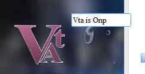
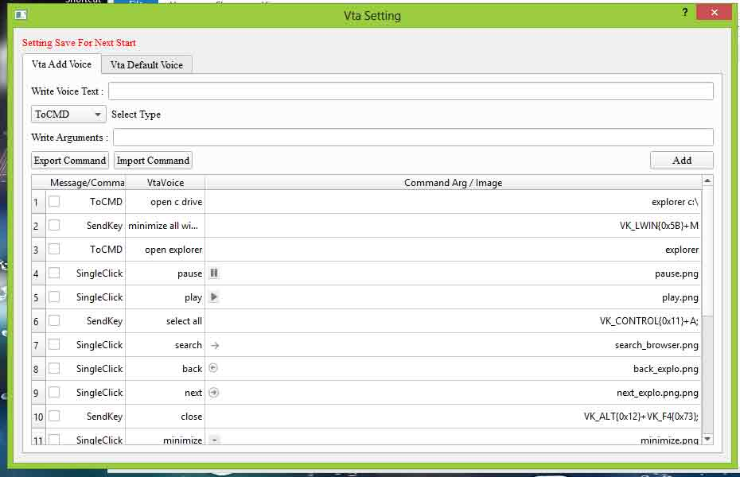

| Project Name : |
Vta ( Virtual Technical Assistant ) |
| Projects Details : |
Vta is a voice recognize. Vta provide a interface bitween your voice and computer command . you can control your computer using your voice and it is a virtual assistance , you can ask qustion and get batter answer so it is called virtual technical assistancs.
This software created in JAVA, C, C++, AIML, CSS embaded language . you can control your compure CMD , KeyBoard , Mouse command with your voice. For cmd you can say open c drive this software send command to cmd ( C:> explorer c:\ ) autometic , you can add more then one command which works in CMD For KeyBoard if you say copy Vta send Clrt+C Keyboard command and if you say past then Vta
send Clrt+V key command you can add more command in Vta. For Mouse need to capture
image where mouse will click, image capture process is inbule in Vta this process is following.
for example if you capture minimize image if you
say minimize Vta search this picture in active window if found then Vta move mouse found location and send click or double click command.
Vta provide English and hindi voice typing if you start hindi typing
you can speak in hindi all speaking word autometic write. Vta also provide a english word to
hindi word convertor, when in hindi typing process some words write wrog you can type english word of hindi in dictionary enhlosh word autometic will convert in hindi. Vta is a good virtual assistance you can ask qustion and get answer.
|
| Project Virsion : |
1) Vta ( Virtual Technical Assistant ) 1.0
|
| Programming Language : |
C & C++ , java , AIML, css |
| Library : |
Windows System , Qt 5.7 , Spinx4 , Freetts ,OpenCV 3.0 ,AIML,C & C++ system |
| Image No : |
Vta , Vta Setting |
| Project Image : |

 |
| Download Projects : |
Vta ( Virtual Technical Assistant ) 1.0 Binary Setup Vta Src |
| View Project Report : |
View Project Report |
| |
|
| |
Projects which in Include in Vta |
| |
|
| Download : |
English to hindi converter English to hindi converter src ReadmeEnToHi |
| Download : |
Vta Voice Typer Bin Voice Typer Src Readme VtaVoiceTyper |
| Download : |
Vta Voice Recognizar Bin VtaSpeechRecognization_scr Readme VtaVoice Recohnizer |
| Download : |
Text To Voice Bin Readme Vta Text To Voice |
| |
|
|